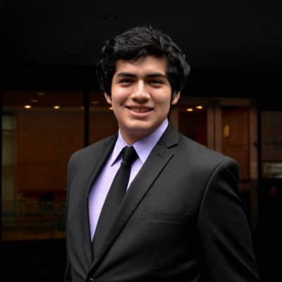

Vikash Singh
CEO - Founder
Vikash Singh, founder of Project
DataREACH is currently enrolled at UCLA as a Stamps Leadership
Scholar, Regents Scholar, and Gold Shield Alumni Association
Scholar with an intended major in Computational and Systems
Biology and a concentration in Computers and Biosystems.
Passionate about scientific advancement since the age of 15,
Vikash first conducted research on breast cancer for several
years in high school, resulting on several publications in
international scientific journals and has then ventured into
working on artificial intelligence/machine learning, with a
focus on deep neural networks and the optimization of methods
to evaluate classification algorithms though working with the
Artificial Intelligence in Medicine (AIM) program at Cedars
Sinai medical. Aside from academics, Vikash has played the
trumpet for over 12 years, both professionally (Disney XD Rock
Orchestra) and through various youth ensembles and has continued
this hobby playing for UCLA’s Symphonic Band. In addition to
music, Vikash is an avid basketball fan (Go Lakers!) who enjoys
playing, watching, and learning the sport. In the future he
hopes to impact the world through developing and bringing to
the market technologies combining AI and medicine/biology.
The Team

Brandon Berookhim
Software - Data Science
Brandon Berookhim is a Los Angeles native in his second year at
UC Berkeley. He is studying Computer Science and Business and is
a Director for the school's hackathon Cal Hacks, in addittion to
being a consultant for TAMID Group's Berkeley Chapter. Berokkhim
hopes to encourage tech literacy and one day found his own
startup company. For now he can be found writing Java code, riding
his bike, playing basketball, and eating burgers.

Raymond Arevalo
Software - UI/UX
Raymond Arevalo is a third year at UCSD studying
Cognitive Science with a Specialization in Human Computer
Interaction and Computer Science. He is currently a DJ and Web
Engineer at KSDT RADIO where he manages web applications built
to improve and diversify music selection for the school's radio.
His interests consist of software Development (Web), algorithms,
cognition, neural networks, photography, and music.

Jonathan Delgadillo
Data Science
Jonathan Delgadillo Lorenzo is a 2nd year student at the University
of Pennsylvania. He plans to study Economics and is involved in
a number of activities including the Penn Band, and the FDT Forex
group on campus. Jonathan is always open to new opportunities and
challenges and loves learning about the world through different
academic lenses. He is originally from Los Angeles, CA and has 2
younger brothers.

Matthew Khanzadeh
Data Science - Design
Matthew Khanzadeh is an Achievements Scholar and Regents Scholar
at UCLA in his third year studying Computer Science. His academic
interests include data science, UX design, machine learning, and
algorithms. In his free time, other than studying new areas of
computer science, he likes to design icons (like the one for this website).
His hobbies also include running, lifting, skating, and music.